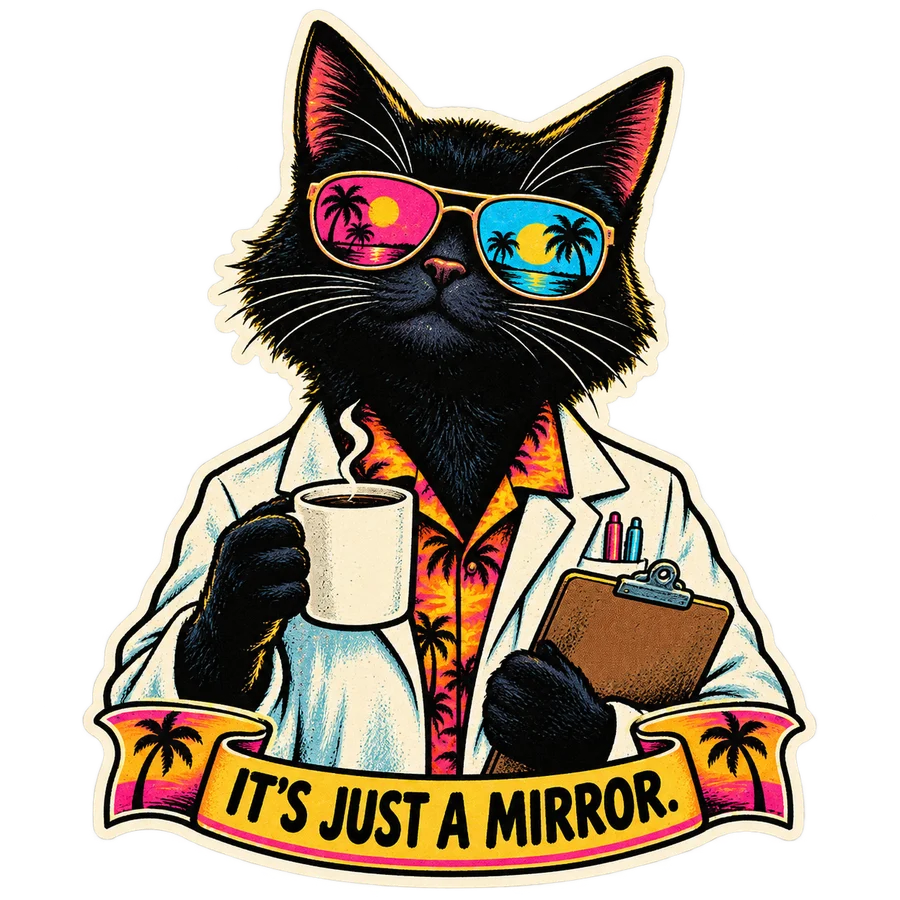

BOOMER
JUST BUILD IT™
When capability becomes wisdom and technology is expected to solve everything automatically.
CIVILIAN OBSERVATION UNIT · EXPERIMENT 001
A small instrument for a very dramatic planet.
Boomer optimism. Doomer certainty. HAOPS bureaucracy.
Four independent signals. One suspiciously enthusiastic audience.
Browser demo: explicit screen sharing + local OCR.
Extension: DOM first, removable stickers, rolling weather.

We measure patterns in rhetoric and systems. A label describes the content—not the person who posted it.
JUST BUILD IT™
When capability becomes wisdom and technology is expected to solve everything automatically.
EVERYBODY PANIC™
When uncertainty becomes catastrophic certainty and fear starts doing the work of evidence.
NOBODY PLANNED THIS
Individually understandable decisions. A collectively ridiculous system. Sometimes there is no mastermind.
GOOD SHIT™
Evidence changes a mind. Opposing groups solve something together. Useful tools preserve human choice. Applause where it is earned.
Try a specimen or write your own. This text test runs entirely in this page.
Experimental English pattern rules, not a trained reasoning model. Scores are satirical intensity settings, not probabilities. Context and paraphrases can be missed.
The extension reads newly visible article text, skips unchanged content, and adds small removable stickers. Its corner HUD reflects recent visible observations. Sound starts only when you enable it.
chrome://extensions (or edge://extensions), enable Developer mode, then choose Load unpacked.Chrome desktop tested. Edge targeted but not separately verified. The browser demo is the original screen-sharing detector; the extension carries all four weather dimensions.
DOWNLOAD FIELD INSTRUMENT ↓Legitimate risks are still legitimate. A detected pattern does not prove stupidity, malicious intent, or that a political position is invalid. HAOPS is about system structure.
GitHub Pages delivers the site and static assets. Screen pixels and text are processed on your device. No app telemetry, accounts, browsing-history upload, or remote inference. Your browser still makes ordinary hosting requests when loading the site.
The screen demo requests sharing only after you click Start. Choose the article tab and check the capture preview. Laughter samples are local; the final Croatian voice is a synthetic stand-in.
AUDIO & SOFTWARE CREDITS ↗